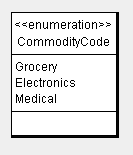

Primitive or Simple Data Types
UML to XSD Mapping
In ArgoUML v.0.26.x a standard UML 1.4 profile was incorporated which provides the small list of the primitive or simple data types included in this UML 1.4 profile. Some of these have XSD counterparts or equivalents as shown in the following mapping table:
UML Data Type |
XSD Data Type |
Comments |
Integer |
xsd:integer |
None |
String |
xsd:string |
None |
UnlimitedInteger |
xsd:long |
None |
Boolean |
xsd:boolean |
None |
If an XSD-specific profile is not used by an end user, the above mapping can be used to base code generation assumptions on. While it is not ideal that a user omit the usage of an XSD profile, this capability should still be provided.
Enumerations
Enumerated lists in ArgoUML are considered to be primitive data types similar to the way in which XSD handles the same approach.

The above would be represented as the following in XSD:
<xsd:simpleType name="newSimpleType">
<xsd:restriction base="xsd:string">
<xsd:enumeration value="Grocery"/>
<xsd:enumeration value="Electronics"/>
<xsd:enumeration value="Medical"/>
</xsd:restriction>
</xsd:simpleType>
 Initially all enumerations will be declared as string restrictions to prevent the likelihood of code generation errors (xsd:string allows for almost any character in the enumeration list in the same way ArgoUML does). At a future point, this could be modified to make it configurable to allow for any simple data type (e.g. token, integer, etc.).
Initially all enumerations will be declared as string restrictions to prevent the likelihood of code generation errors (xsd:string allows for almost any character in the enumeration list in the same way ArgoUML does). At a future point, this could be modified to make it configurable to allow for any simple data type (e.g. token, integer, etc.).